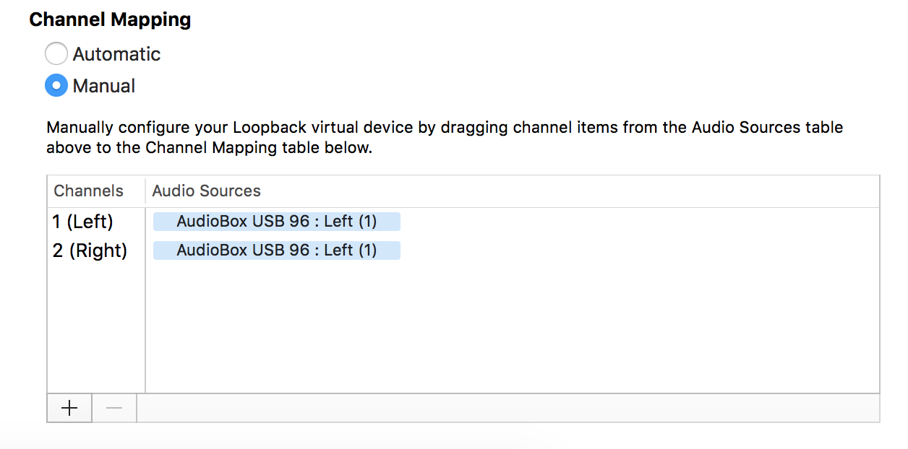
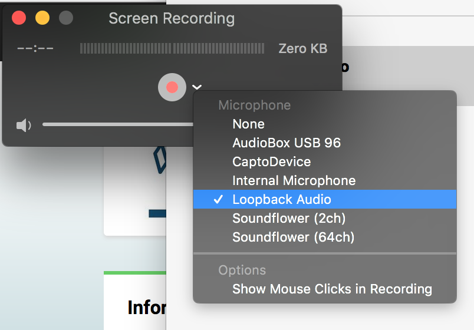
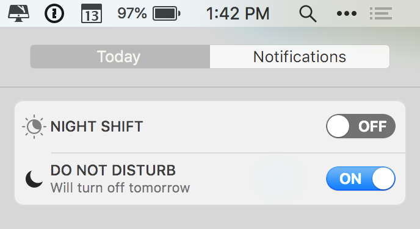

Don’t just come up with an idea for a lesson, sit down, and hit record. A bit of preparation can go a long way toward making higher quality lessons while also reducing the time you spend re-recording or fixing mistakes.
The basic components of planning the lesson are:
Go through the project yourself, in detail, before recording. You might feel like you can “wing it” but even with simple examples, you put yourself at risk of stumbling across something you didn’t plan on. Maybe there is a project dependency you forgot you needed, or you forgot the API details for a library. Going through your lesson step-by-step before recording will result in a better end result.
Make high-level process notes to serve as a script. It can be easy to forget where you are, and what is next, when recording a lesson. Make a bullet-point list of the steps and keep it next to your computer for reference while recording.
Keep it short, breaking the lesson into multiple steps if necessary. Lesson videos should be less than 20 minutes total. If you’re creating a longer lesson or project, break it up into logical sections. At the beginning of each section, remind the learner that the video is part of a larger series, and they should have viewed the earlier videos before beginning the current video.
We’ll use Quicktime and Loopback to record and route audio, respectively. You already have Quicktime, but you’ll need to install Loopback.
Note
Without paying for a Loopback license, audio quality will be degraded after 20 minutes. Keep recordings shorter than this (though you should be doing so for pedagogical reasons, anyway).
LaunchCode can lend you a recording kit for making a lesson. Your kit will contain:

Open Loopback and add a device from the left-hand menu. This new device will be a “virtual” audio source through which we’ll route the mono/left channel microphone audio to a stereo output.
In the right-hand panel, select the + icon in the Source section and select Audiobox.

In the bottom-right section, set Channel Mapping to Automatic. Then drag the Left (1) channel from the top section to both 1 (Left) and 2 (Right) output channels in the bottom section.
Open Quicktime and select File > New Screen Recording.

Select Audiobox as the audio source from the dropdown just right of the Record button.
Follow these steps to prepare for and make your lesson recording.
Turn off notifications. From the Notification Center, turn on Do Not Disturb. This will ensure that any system or message notifications are displayed while recording. You don’t want embarrassing messages from a friend or spouse ending up in a lesson video!
Prep your desktop. Be aware of any personal info that might be visible (files on desktop, bookmarks in browser toolbar, open tabs, etc). Remember, this video will be publicly available on the internet. It’s also suggested that you close down windows and apps that won’t be in use during the lesson.
Position the microphone. Slip the mic into the mic stand, and position the mic between you and your keyboard, between your arms. This is necessary for a good positioning distance for the mic. The mic should be 4-6 inches from your mouth. It should look like this:

Test. It is highly recommended that you make a short test recording to make sure everything was set up properly. Follow the steps below, record a few seconds of yourself talking, and watch it back. Make sure the audio sounds clear and has a good tone. If it doesn’t, then you likely have the audio source in Quicktime set incorrectly.
Start the recording. Hit Record on Quicktime, then click anywhere on the screen to begin recording.
Begin by introducing yourself and describing the lesson. You may use this intro as a template:
“Hi, I’m (your name) with LaunchCode. In this lesson for the (topic) learning track we will (lesson overview).”
When you are done recording, click the Stop icon in the menu bar and save the video file.
LaunchCode staff will take care of the hard work of editing and publishing your video.
{kind=link}
{kind=link}
{kind=link}